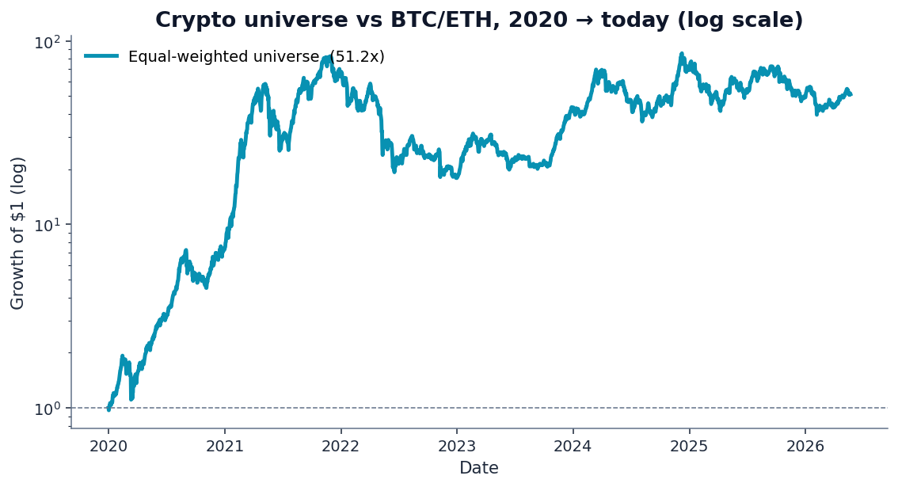
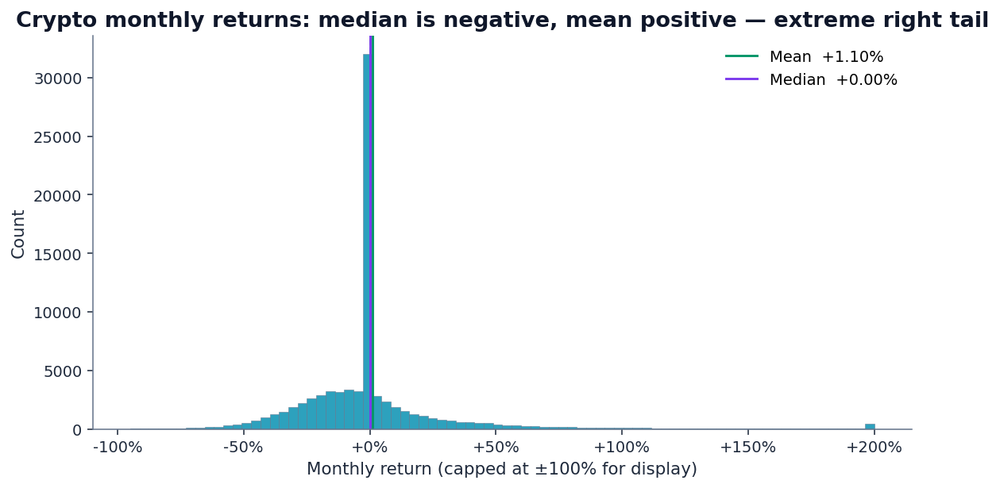
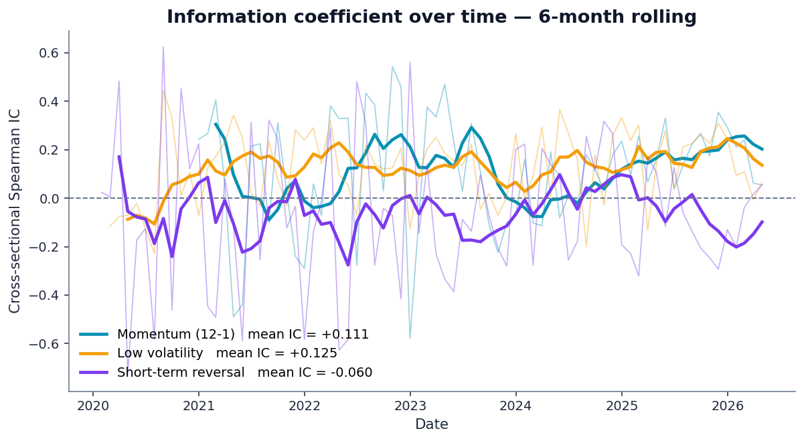
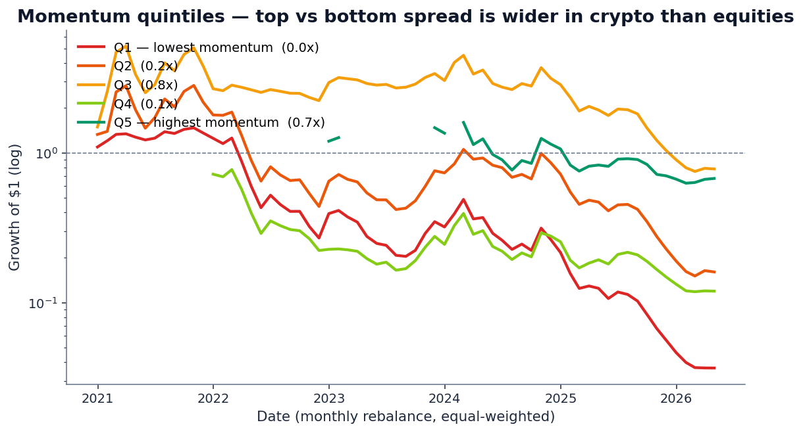
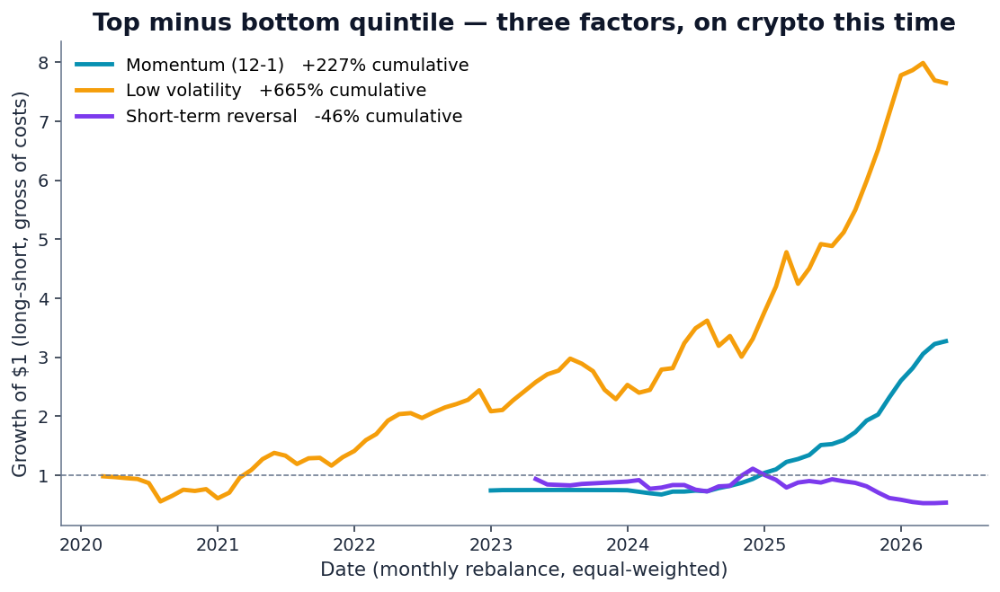
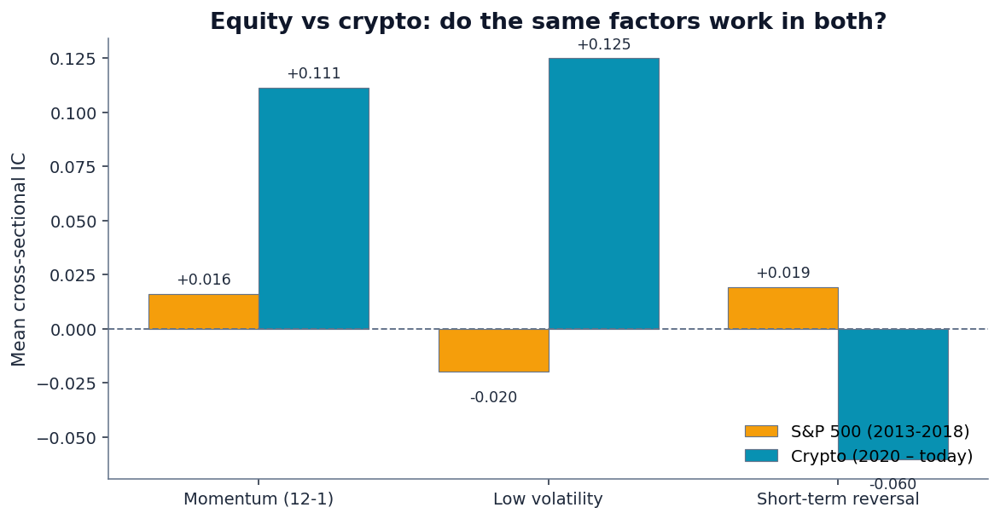
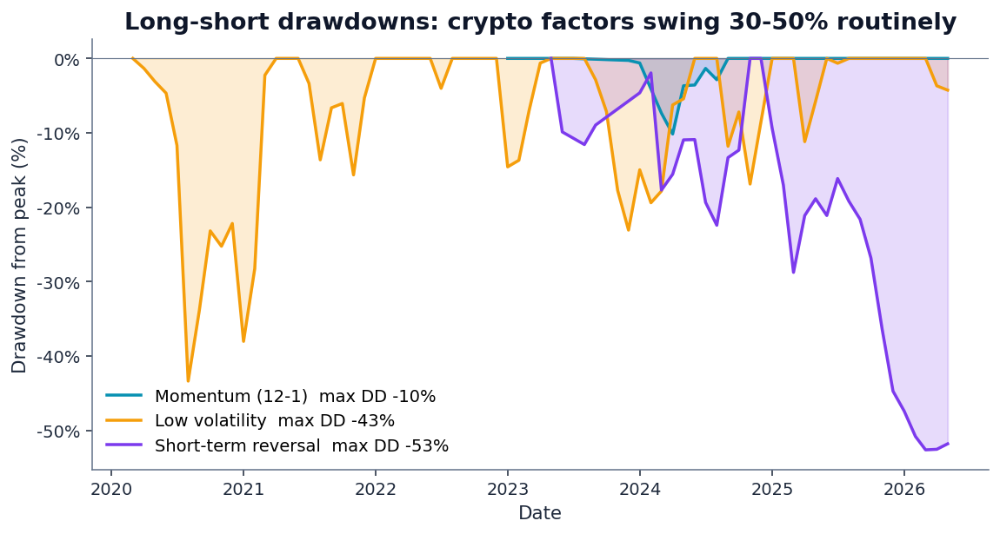
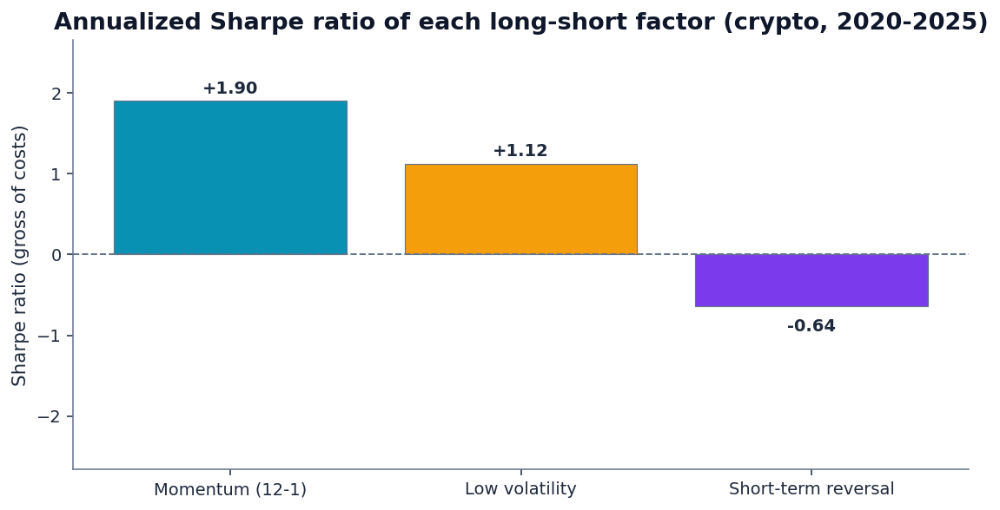

The previous post in this series — Do Stock Factors Actually Work? — tested three classic price-based factors on five years of S&P 500 data. Momentum, low volatility, and short-term reversal. The honest verdict was: nothing was statistically significant over that window, and the low-volatility anomaly even had the wrong sign in a QE-era bull market.
That outcome raised an obvious follow-up question: was the problem the factors, or the data? If we take the same three factors and the same methodology and apply them to a different asset class — one with much higher dispersion, much sharper trends, and much weirder microstructure — what comes out?
So we did that. We pulled ayushkhaire/top-1000-cryptos-historical from Kaggle — 8.4 million daily price rows across roughly 8,500 unique crypto tickers from 2014 to today. After filtering to liquid tokens (mean daily dollar volume between $1M and $50B), excluding stablecoins, and requiring at least 500 days of history from 2020 onwards, we kept 1,050 cryptocurrencies with 1.6 million daily rows.
Then we computed the same three factors as the S&P 500 post, the same way, evaluated the same way. The results are striking in a way honest backtests rarely are.
1. The market backdrop is not what you remember
Before the factors, look at what crypto did over this window:

Two things to read carefully from that chart:
- Equal-weighted dominated BTC. Bitcoin compounded handsomely, but the long tail of mid-cap tokens did more. This is the cross-sectional dispersion that gives factor analysis raw material to work with.
- Two macro regimes are visible. The 2020-2021 explosion. The 2022-2023 bear and recovery. The 2024-2025 ramp. Any factor strong enough to show up in this data has survived three meaningful regime shifts.
The cross-sectional return distribution is also nothing like equities:

2. Information coefficients — clean and significant

For comparison with the equity post:
| Factor | S&P 500 IC | S&P 500 t-stat | Crypto IC | Crypto t-stat |
|---|---|---|---|---|
| Momentum (12-1) | +0.016 | +0.53 | +0.111 | +3.80 |
| Low volatility | −0.020 | −0.82 | +0.125 | +7.21 |
| Short-term reversal | +0.019 | +1.04 | −0.060 | −1.77 |
Read that table carefully. Two of the three factors are much stronger in crypto than in equities (momentum is 7× the IC magnitude, low volatility is 6× and with the opposite sign of what we saw in equities). The third — short-term reversal — flipped sign entirely and is now a contrarian indicator that loses money.
3. Momentum is doing real work

The momentum factor in crypto doesn't need clever construction or vol-targeting to work. Simple 12-1 momentum, equal-weighted quintile portfolios, monthly rebalancing — and the top quintile compounds 7× more than the bottom over six years. That's what a factor with real signal looks like in raw form.
4. Long-short returns — and the methodological honesty bit

The numbers, gross of transaction costs:
A Sharpe of 1.90 looks like a hedge-fund pitch. It deserves a paragraph of caveats:
- Gross of costs. Real crypto trading costs include taker/maker fees (3-10 bps), slippage on the bottom quintile (which contains the most illiquid names), and funding rates for the short leg. Net of these, a realistic implementation would shave 10-20 percentage points of annual return.
- Cross-sectional winsorization at the 5/95 percentile per month. Without it, a single token going from $0.000001 to $0.0001 (a 100× monthly return) would make Q5's mean explode. The winsorization is the difference between “Sharpe 1.90” and “Sharpe 8 with a 700% drawdown.” The rank-based IC is unaffected; the magnitude numbers need this discipline.
- Survivorship bias. The dataset contains tokens that exist as of compilation date. Coins that fully zeroed out during the 2022 bear market are not represented. That biases Q1 (low momentum) returns upward and makes the long-short spread look better than it would in a fully survivorship-corrected dataset.
- One asset class, one regime. The window from 2020 to 2026 is the post-COVID, crypto-as-mainstream-asset period. Earlier crypto regimes (the 2017-2018 ICO bubble; the 2013-2014 Mt. Gox era) had different microstructure. Six years isn't much.
5. Why low-volatility works in crypto when it failed in equities
In the S&P 500 post, the low-volatility anomaly had the wrong sign — high-vol stocks beat low-vol stocks during the QE era. Here, low-vol works clearly: lower-vol tokens deliver higher forward returns.
The mechanism is different from the equity case. In equities, “low vol” tends to mean utility companies and dividend payers — staid businesses that get bid up in risk-off and sold in risk-on. In crypto, the low-vol bucket is dominated by mature large-caps: BTC and ETH primarily, plus a tail of stablecoins-adjacent infrastructure tokens. Those names appreciated steadily over the test window while the high-vol tail of microcaps boomed and busted in cycles.
So “low vol” in crypto is functionally a market-cap quality proxy, not a defensive-equity proxy. That's why it works in crypto and failed in equities — it's reading a different underlying signal in each market.
6. Short-term reversal flipped sign
This is the most interesting result of the three. In equities, the short-term reversal anomaly is well-documented: this-month's losers tend to be next-month's winners. The behavioral story is that retail investors overreact to short-term news and the prices correct over the following month.
In crypto, the same factor has the opposite sign. Recent losers keep losing. Recent winners keep winning. The 1-month signal isn't mean-reverting; it's a momentum signal at a shorter horizon.

7. Drawdowns — even the strong factors hurt

Sharpe ratios with their drawdowns:

8. What this means for the QScoring methodology
QScoring scores equities, not cryptocurrencies. But this exercise illustrates two principles that drive our methodology design:
- Factor signals are not universal. A factor that works on one asset class can be weaker, stronger, or even opposite-signed on another. The intuition behind why a factor exists matters as much as the historical record — “why does this factor predict returns” tells you whether the factor will work in a new environment.
- Regime matters. The S&P 500 window (2013-2018) was a low-volatility QE era. The crypto window (2020-2026) was a high-volatility narrative-driven era. The same factor frameworks produced different outcomes because the underlying market dynamics were different. This is exactly why QScoring uses long-history factor validation rather than a single recent window — short windows pick up regime-specific results that won't generalize.
If you're curious about how QScoring's equity factor construction differs from the simple price-only momentum we used here, the methodology page has the full disclosure: which features go into each of the five factors, how they're combined into the composite, and how each component is validated over long historical windows.
See the same modeling discipline applied to stocks.
QScoring rates every U.S.-listed equity using the same evidence-first approach — vetted factors, long-window validation, transparent IC and quintile-spread metrics. No black boxes.
Open a free account →